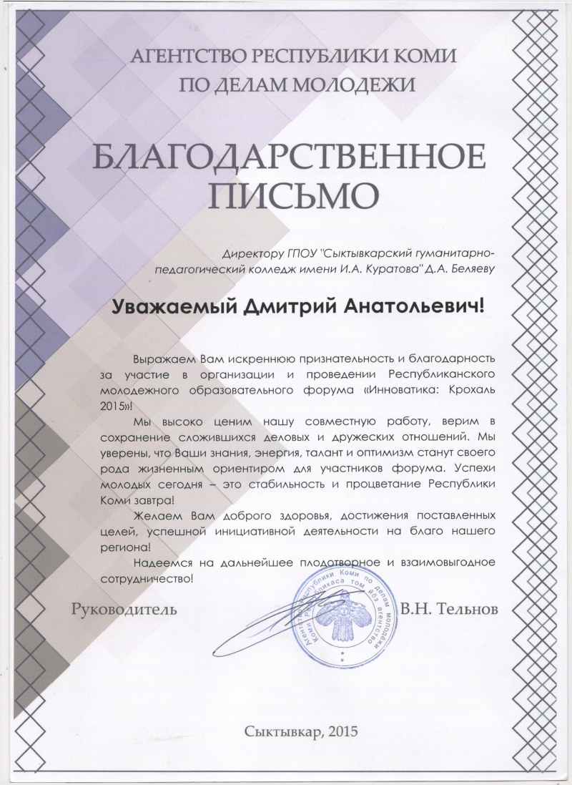

Вчера, 8 сентября, в «Оранжевом зале» Республиканской юношеской библиотеки Тельнов Виктор Николаевич, руководитель Агенства по делам молодёжи, торжественно вручил благодарственные письма всем, кто оказывал помощь и участвовал в организации и проведении Республиканского молодежного образовательного форума «Инноватика: Крохаль 2015».
(Напомним, что на форуме "Инноватика: Крохаль 2015" впервые присутствовала делегация Сыктывкарского гуманитарно-педагогического колледжа им. И.А. Куратова в составе студентов отделения туризма под руководством преподавателя колледжа Гаштур Светланы Алексеевны).
10 сентября 2015 года в актовом зале колледжа представители Агентства Республики Коми по делам молодежи и коллектив Сыктывкарского гуманитарно-педагогического колледжа заключат Соглашение о сотрудничестве и взаимодействии.